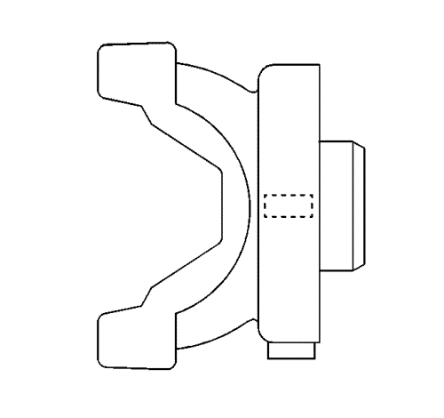
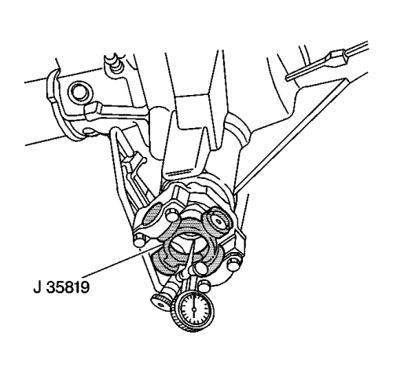
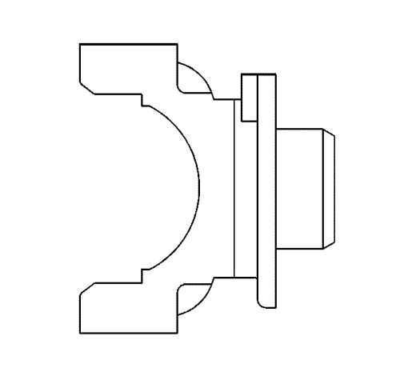

Medición del alabeo de la brida del piñón
Herramientas especiales
| • | Juego del Indicador de dial GE-8001 ó equivalente |
| • | Prolongación del indicador de dial J-23409 o equivalente |
| • | J-35819 Indicador de alabeo de brida |
Si desea informarse sobre herramientas regionales equivalentes, consultar Herramientas y equipo especial .
Nota: Este procedimiento de medición está destinado a medir las bridas de piñón del eje motriz que sólo tienen horquillas de junta en U de una pieza, no horquillas atornilladas.
Si está equipado con una brida de sistema equilibrado, use el siguiente procedimiento, Brida de sistema equilibrado. Si está equipado con una brida de sistema no equilibrado, use el siguiente procedimiento, Brida de sistema no equilibrado.
Brida de sistema equilibrado

Los ejes motrices de sistema equilibrado utilizan un diseño de deflector en la brida del piñón que puede retener los pesos de equilibrado del sistema en su diámetro exterior.
- Levante y apoye el vehículo de forma que las ruedas giren libremente. Consultar Elevación del vehículo con un gato .
- Desmonte el árbol de transmisión de la brida del piñón.

- Monte el indicador de alabeo de brida J-35819 en el piñón de brida.
- Ensamble y monte el juego indicador de disco GE-8001 y la prolongación del indicador de disco J-23409 en el eje motriz y en el indicador de alabeo de brida J-35819.
Nota: El indicador de disco mostrará lecturas invertidas. Usted está midiendo el diámetro interior de la brida, no el diámetro exterior. La lectura más alta en el indicador de disco es el punto bajo, la lectura más baja es el punto alto.
- Gire la brida del piñón 360 grados y ponga a cero el indicador de disco en el punto bajo.
- Gire de nuevo la brida del piñón y registre el alabeo total.
Nota: Todas las tolerancias de medición de alabeo suministradas se tienen que usar como pauta. Las tolerancias de medición suministradas y su efecto sobre la corrección de la vibración pueden variar para cada vehículo.
- Si la medición del alabeo de la brida del piñón de sistema equilibrado está entre 0,00-0,38 mm (0,00-0,015 pulg.), la brida del piñón se considera dentro de los límites aceptables de alabeo.
- Si la medición del alabeo de la brida del piñón de sistema equilibrado excede 0,00-0,38 mm (0,00-0,015 pulg.), la brida del piñón se debe volver a indexar 180 grados o se tiene que cambiar.
Si el eje motriz utiliza un casquillo de compresión para conseguir una precarga del cojinete de piñón, la brida del piñón sólo se puede desmontar y montar una vez antes de que se tenga que cambiar. La sustitución del casquillo requiere el desmontaje y el montaje del juego de piñones y anillos. Si existen pruebas de que el piñón se ha desmontado y se ha montado previamente, cambie el casquillo.
- Si se ha reindexado la brida del piñón, vuelva a medir el alabeo de la brida del piñón.
- Si la nueva medición del alabeo de la brida del piñón reindexada sigue excediendo las pautas de tolerancia, es necesario cambiar la brida del piñón.
Nota: Compruebe el alabeo de cualquier brida de piñón repuesta.
- Si se ha cambiado la brida del piñón, compruebe el alabeo de la nueva brida del piñón.
Nota: Si se ha reindexado o se ha sustituido la brida del piñón, siempre se DEBE equilibrar el sistema de la transmisión.
- Si se ha reindexado o se ha sustituido la brida del piñón, equilibre el sistema de la transmisión. Consultar Ajuste de equilibrado del sistema de componentes de propulsión .
Brida de sistema no equilibrado

Los ejes motrices cuyo sistema no está equilibrado usan un diseño de deflector de polvo de brida de piñón que puede mantener un peso de compensación de alabeo en la superficie del deflector de polvo.
- Levante y apoye el vehículo de forma que las ruedas giren libremente. Consultar Elevación del vehículo con un gato .
- Desmonte el árbol de transmisión de la brida del piñón.
- Monte el indicador de alabeo de brida J-35819 en el piñón de brida.
- Ensamble y monte el juego indicador de disco GE-8001 y la prolongación del indicador de disco J-23409 en el eje motriz y en el indicador de alabeo de brida J-35819.
Nota: El indicador de disco mostrará lecturas invertidas. Usted está midiendo el diámetro interior de la brida, no el diámetro exterior. La lectura más alta en el indicador de disco es el punto bajo, la lectura más baja es el punto alto.
- Gire la brida del piñón 360 grados y ponga a cero el indicador de disco en el punto bajo.
- Gire de nuevo la brida del piñón y registre el alabeo total.
Nota: Todas las tolerancias de medición de alabeo suministradas se tienen que usar como pauta. Las tolerancias de medición suministradas y su efecto sobre la corrección de la vibración pueden variar para cada vehículo.
- Si el alabeo de la brida de piñón es 0,15 mm (0,006 pulg.) o menos, no debería haber un peso de compensación de alabeo. Si hay un peso de compensación, desmóntelo.
- Si el alabeo de la brida del piñón es superior a 0,15 mm (0,006 pulg.) pero inferior a 0,28 mm (0,011 pulg.) y el peso de compensación del alabeo está en o cerca del punto bajo, no es necesaria ninguna otra medida. Si el peso de compensación del alabeo no está en o cerca de su punto bajo, desmonte el peso.
- Si el alabeo de la brida del piñón es superior a 0,28 mm (0,011 pulg.) pero no superior a 0,38 mm (0,015 pulg.) y el peso de compensación del alabeo está en o cerca del punto bajo, no es necesaria ninguna otra medida. Si el peso de compensación del alabeo no está en o cerca del punto bajo, desmonte el peso y vuelva a indexar la brida del piñón hasta que el alabeo este en 0,25 mm (0,010 pulg.) o menos.
Si el eje motriz utiliza un casquillo de compresión para conseguir una precarga del cojinete de piñón, la brida del piñón sólo se puede desmontar y montar una vez antes de que se tenga que cambiar. La sustitución del casquillo requiere el desmontaje y el montaje del juego de piñones y anillos. Si existen pruebas de que el piñón se ha desmontado y se ha montado previamente, cambie el casquillo.
- Si tras reindexar la brida del piñón no es posible conseguir un alabeo de 0,25 mm (0,010 pulg.) o menos, es necesario cambiar la brida del piñón.
Nota: Compruebe el alabeo de cualquier brida de piñón repuesta.
- Si se ha cambiado la brida del piñón, compruebe el alabeo de la nueva brida del piñón.
| © Copyright Chevrolet Europe. All rights reserved |